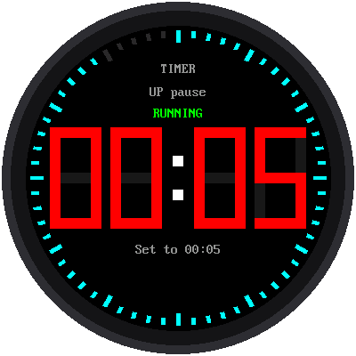
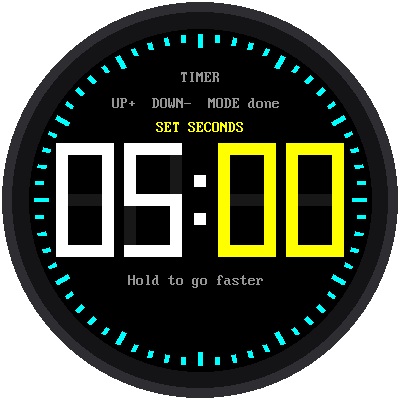

Lab 11: A Countdown Timer

A countdown timer counts down to zero, then sounds an alarm. It's great for cooking, homework breaks, or board games. Set the minutes and seconds with the buttons, press start, and watch the ring around the edge empty as time runs out.
Welcome to Lab 11
By the end of this lab, one button will do three different jobs, and you'll know how to design a program like that yourself. It's one of the most useful ideas in all of programming. Let's make time tick!
What You Will Learn
- how to set a number with buttons
- what a state machine is (every video game uses them!)
- how a program can count down without drifting
Run It
Open 11-countdown-timer.py in Thonny and click Run. It starts at
5:00. To change it:
- Press MODE. The minutes turn yellow.
- Press UP or DOWN to change them. Hold a button to go faster.
- Press MODE. Now the seconds are yellow. Change them too.
- Press MODE once more when you're done.
- Press UP to start!

While it counts down, UP pauses it and UP again keeps going. While it's paused, DOWN resets it back to the time you set. For the last 10 seconds the numbers turn red. At zero, the screen flashes 00:00 and TIME'S UP! in red, and the Pico's little green light flashes too, until you press any button.
What Is a State Machine?
Here's a puzzle: what does the UP button do? It depends!
- While you're setting the time, UP adds one.
- When the timer is ready, UP starts it.
- While it's running, UP pauses it.
The timer is always in exactly one state, and the state decides what
each button does. The program keeps the current state in one variable,
state, and every time a button is pressed it asks, "What state am I in
right now?" Here are all six states, with arrows showing which button
moves the timer from one state to the next:
stateDiagram-v2
direction LR
state "Set minutes" as SM
state "Set seconds" as SS
state "Ready" as R
state "Running" as RUN
state "Paused" as P
state "Time is up!" as D
[*] --> R
R --> SM: MODE
SM --> SS: MODE
SS --> R: MODE
R --> RUN: UP
RUN --> P: UP
P --> RUN: UP
P --> R: DOWN
RUN --> D: reaches 00:00
D --> R: any buttonThis picture is called a state diagram. Video games use state machines all the time: a character might be standing, running, jumping, or falling, and pressing the jump button only works in some of those states.
State Machines Are Everywhere
Think about a microwave: on many models, pressing Start while it's already running adds 30 seconds instead of starting over. That's a state machine too. The next time a button surprises you on any gadget, look for the states hiding inside.
Counting Down Without Drifting
Like the stopwatch, the timer doesn't subtract a little each time around its loop. When you press start, it works out the exact moment the timer will end. Then, whenever it needs to, it checks how far away that moment is:
1 2 | |
The Shrinking Ring
The ring of 60 ticks shows how much time is left. At the start, all 60 are lit. When half the time is gone, only 30 are lit. Only the one tick that goes dark gets redrawn, so the ring never flickers.
Add a buzzer
The alarm is silent unless you add a small piezo buzzer, a tiny
speaker that beeps. Connect its + leg to a free pin, such as GP16,
and its − leg to GND. Then open config.py and change
BUZZER_PIN = None to BUZZER_PIN = 16. It will beep in time with
the flashing.
Try This
- Set the timer for 10 seconds and watch the numbers turn red.
- Change
START_MINUTES = 5at the top of the program to the number of minutes you use most. - Change
WARNING_MS = 10_000to30_000. When do the numbers turn red now? (1,000 ms is one second.)
Time's Up, and You Did It!
You built a state machine with six states and a countdown that doesn't drift. Next comes the big finish: all five watch faces in one watch.